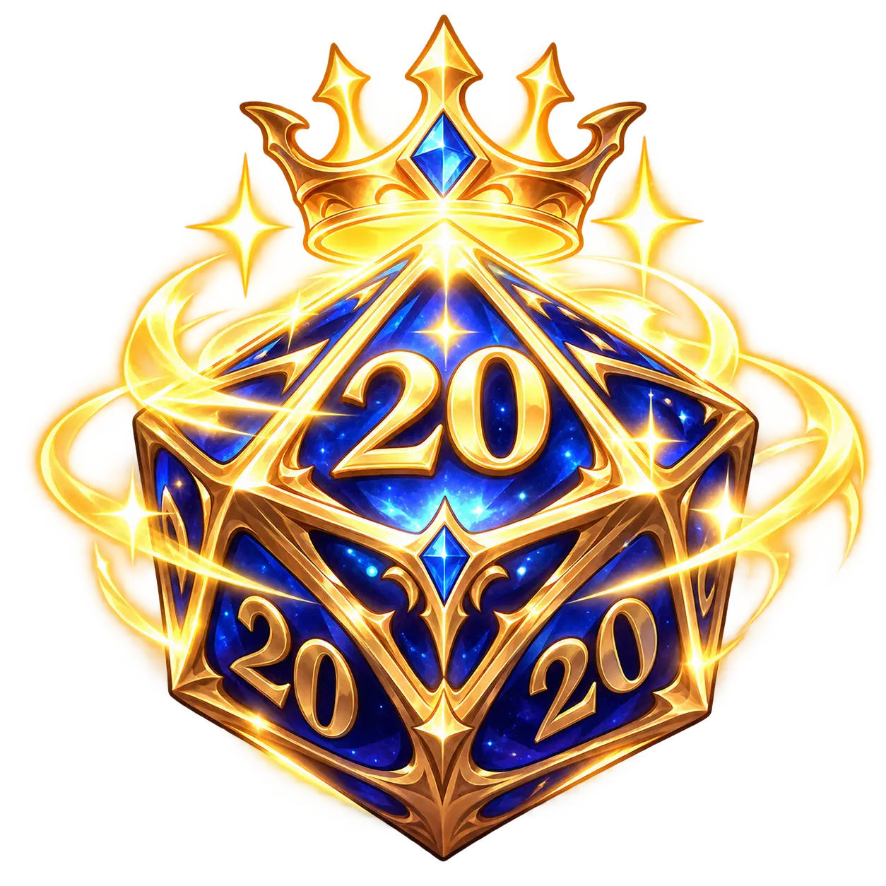

← All free tools
FREE RPG TOOL · NO ACCOUNT REQUIRED
Online Dice Roller
Throw virtual D4, D6, D8, D10, D12, D20 and D100 dice with modifiers, advantage and disadvantage.

—
Ready to roll
ROLL HISTORY
- Your rolls will appear here.
HOW IT WORKS
This browser-based dice roller simulates a fair random result for each die. Choose how many dice to roll and add a numeric modifier. Advantage or disadvantage rolls two D20s and keeps the higher or lower result; it is available only when you select one D20.
FREQUENTLY ASKED QUESTIONS
Is this a real D20 roll?
Each virtual D20 produces an integer from 1 to 20 using the browser’s secure random number generator where available.
Can I roll multiple dice?
Yes. Roll up to 20 dice at a time and add a modifier. Advantage and disadvantage apply to a single D20.